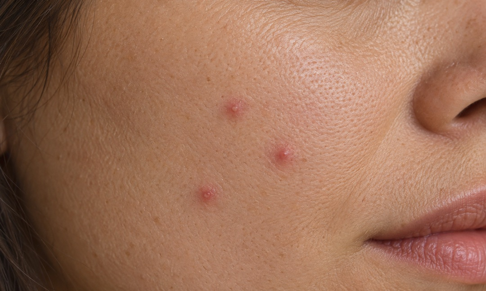
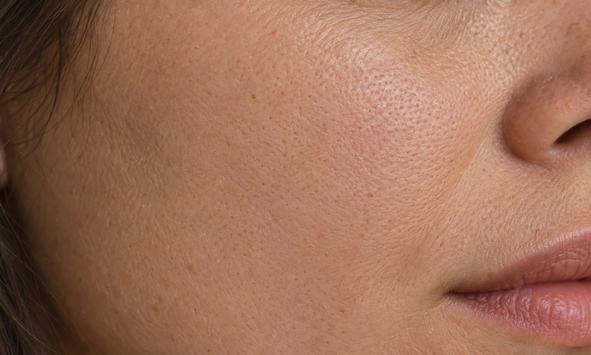

Help & support
Healing Brush
Illustration only. Results vary by photo.
Acne Removal


Illustration only. Results vary by photo.
Healing Brush: paint, then lift 1. Open Healing from the home screen, or choose Healing Brush in the editor. Adjust the brush so it is slightly wider than the small scratch or mark. 2. Cover the target with a short stroke, lift your finger, and wait for the repair. Work on one small area at a time rather than painting repeatedly across a large region. 3. Hold Compare to inspect details. Undo and retry a smaller area if needed. Confirm keeps this panel’s changes; Cancel discards its unconfirmed changes. Demo images illustrate the operation, not a guaranteed result for every photo. Small repairs work best; complex edges or textures may leave visible artifacts.
Acne Removal: dab manually or turn on Auto 1. Open Acne Removal from the home screen or editor. Adjust the brush, dab an individual pimple or small spot, then lift to repair. 2. Alternatively, turn on Auto. It shows as on only when face detection and suitable candidates are available and a repair succeeds. If no suitable target is found, continue manually. 3. Turning Auto off removes this panel’s automatic repairs while preserving subsequent manual strokes. Hold Compare to inspect, and undo if needed. Confirm keeps the changes; Cancel discards this panel’s changes. Auto may mistake moles, makeup or other details for blemishes. Review before saving. This feature edits photo appearance; it does not diagnose or treat skin conditions.
Choosing a photo and basic editing Tap Edit to choose a photo or Camera to take one. The picker shows only photos you allow; use its album menu to change albums. Camera permission is requested only when you choose Camera, and captures are not saved automatically. Adjust changes brightness, exposure, contrast and other values with sliders. Filters lets you choose a style and change its strength. Hold Compare to inspect the prior image, and use Undo or Redo to review editing steps. Crop supports moving the frame, dragging edges, ratios and rotation. Confirm applies the crop; Cancel preserves the starting composition.
Saving, formats and sharing Before saving, open Settings → Save Settings to choose JPEG, HEIC or PNG, Standard or Full size, and an available quality level. PNG is lossless and does not use lossy quality levels. Standard still output has a long edge of at most 2048 pixels. Full size uses the current working image size; images larger than 4096 pixels on the long edge are resized on import. Motion preservation and its fixed output rules are explained in Save Settings. Tap Save at the top of the editor to grant any needed add-to-Photos permission and save a separate copy. The result page opens after saving succeeds. Sharing uses a still copy of the saved result and does not overwrite your original. If permission is denied, change it in iOS Settings and retry saving.
Troubleshooting Photo will not open: confirm it has downloaded from iCloud, select it again, and check photo access in iOS Settings. Repair looks unnatural: use a smaller brush and short strokes; avoid eyes, lips, hair and complex edges. Undo unwanted changes. If Auto finds no result, use manual dabs. Save fails: check photo permissions and free storage, keep the app open, and retry. Failure does not automatically clear your current edits. Sessions are not automatically saved as projects. Save before leaving the editor to avoid discarding unsaved work.
Contact support Open Settings → Feedback to prepare an email. If system Mail is not configured, copy the support address. Include the app version, device model and steps to reproduce the issue. Private photos are not required.
Contact Support email: zhengjianzhaokefu@163.com Privacy policy: https://chenbingios.github.io/LumiEdit-Support/privacy-en.html Support: https://chenbingios.github.io/LumiEdit-Support/support-en.html